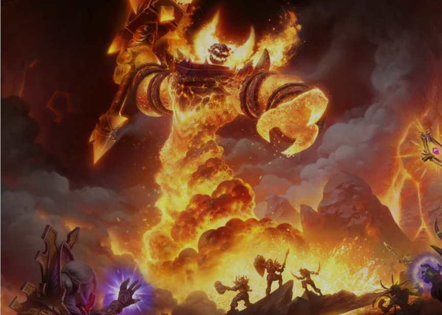

News › Interview des développeurs
Marché noir, raids et aide aux quêtes : les devs répondent
7 novembre 2026
Kris Zierhut et Josh Greenfield, de l'équipe de WoW Forever, ont répondu aux questions de MrGM. On a retenu l'essentiel : le marché noir, les futurs raids, l'aide aux quêtes et ce qui n'arrivera jamais.

L'hôtel des ventes du marché noir
- Son rôle : donner aux joueurs des objets intéressants où dépenser leur or, pour éviter l'inflation sur le long terme.
- Au lancement, il propose quelques montures et quelques familiers, ainsi que des pièces d'ensembles de donjon, utiles pour la quête de Lord Valthalak.
- Un marchand à part vend des ressources rares, comme le Lotus noir, pour plafonner leur prix.
- Le Destrier de la mort de Vaillefendre n'y est plus proposé.
Les raids
- Ils ouvrent partout en même temps le 9 décembre (voir la Roadmap).
- Difficulté visée : au-dessus du Cœur du Magma, proche de Naxxramas, sans aller jusqu'aux Quatre Cavaliers. Les combats seront plus longs qu'en Classic, et certains seront tout nouveaux.
- Les objets des nouveaux donjons et raids restent cachés dans le client tant que personne ne les a trouvés : pas de fuite de butin avant l'heure.
- Chaque boss peut lâcher, plus rarement, des objets très recherchés : une dizaine par raid. Un nouveau bâton légendaire a été montré.
- Le raid à 10 joueurs Profondeurs des Saisons (Barrow Deeps en anglais) se veut plus proche de Karazhan que du pic Rochenoire : faisable en groupe aléatoire après quelques semaines ou quelques mois.
Une aide aux quêtes intégrée
L'équipe veut donner assez d'informations dans le jeu pour qu'on n'ait plus besoin de Questie, mais en restant plus léger que lui, qu'elle trouve trop directif. Pas de balises de destination comme dans WoW moderne. En attendant, nos addons conseillés restent utiles.
Ce qui n'arrivera jamais
Les montures volantes, l'arène classée et le partage des monstres entre joueurs non groupés sont exclus.
Et aussi
- Hôtel des ventes : le dépôt minimum, passé à 1 pièce d'argent au lancement, va revenir à 1 pièce de cuivre, comme dans Classic : retiré au dernier moment de la mise à jour du 11 novembre, le changement est prévu avec la maintenance du 17 novembre.
- Un royaume de test (PTR) est probable, surtout pour la stabilité. Les raids n'y seront sans doute pas.
- Les développeurs préfèrent laisser les joueurs découvrir eux-mêmes les meilleures classes : notre tier list est donc une base, pas une vérité.
Sources : Wowhead, qui résume l'interview de MrGM, et Wowhead pour le dépôt de l'hôtel des ventes (7 novembre 2026).